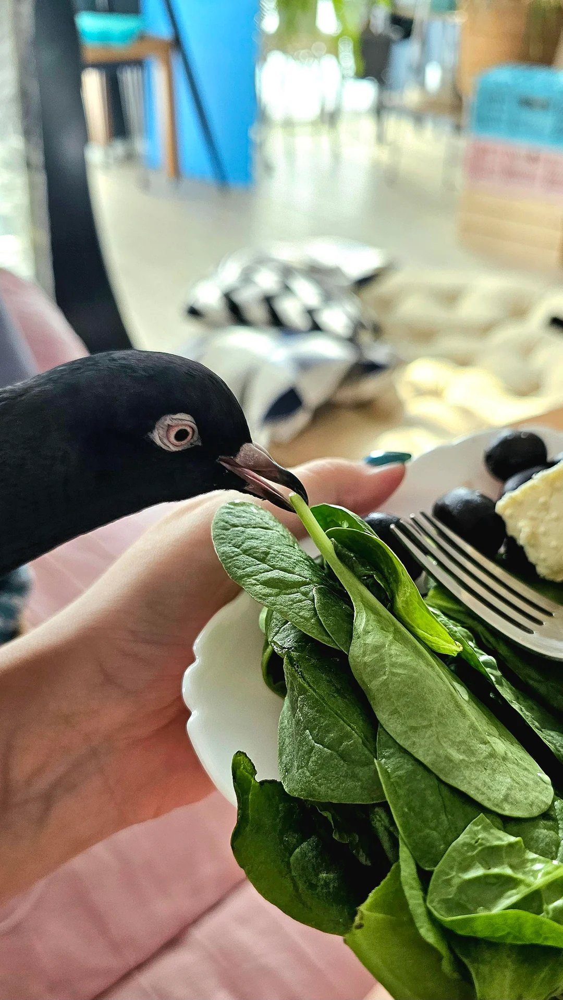

March 10, 2026
Pigeons are mainly granivores, meaning that they should be on a diet of primarily seeds. Though vegetables and fruits should never be a part
of their main diet, studies show that pigeons and doves in the wild will usually eat grains and seeds, with occasional intake of berries and some
other plants! While pigeons are primarily granivorous, research shows that dietary diversity and plant-derived nutrients play a role
in avian health. Leafy greens and vegetables provide carotenoids, vitamins, and minerals that support immune function, metabolism, and tissue health.
It is a myth that small amounts of vegetables or fruits will kill or harm your bird. This myth is widespread in the pet pigeon community, despite
little evidence that small amounts of vegetables or fruits cause harm. In fact, evidence shows that small amounts of vegetables can even be beneficial for pigeons!
We recommend treating vegetables as enrichment tools and nothing more. Fruits, however,
are very high in sugar, which can be damaging to your bird's health, and should only be offered in moderation as treats. Regardless, fruits and
vegetables should be finely chopped or minced for ease of ingestion. We recommend offering vegetables up to 3 or 4 times per week, but never daily.
We do not recommend vegetables making up more than 10% of weekly food intake. Fruits are treats only.

The following vegetables and legumes are considered safe for pigeons.
Out of these, you can use greens, sprouts, and leafy vegetables as enrichment tools. Pigeons don't have strong beaks, and these are a bit easier
for them to tear apart than other vegetables. Canned vegetables should have no added sweeteners. Purees of different veggies can be
offered so long as there's no added sugar.
Pigeons should not eat most food off your plate! But here, in a post made by u/blueyurble on Reddit, the spinach is unseasoned with no dressing, making it safe.
As stated before, fruits should be offered only as treats. The following fruits are safe for pigeons. In general, avoid feeding ANY fruit seeds or pits to pigeons.
There are a plethora of toxic foods for pigeons and birds alike. Among these are avocado, chocolate, caffeine products, alliums, fruit seeds and pits,
alcohol, high-salt foods, dairy products, and sugary or artificially sweetened foods.
Avocados are a known toxic food to most animals. The fruit, skin, and pit are all toxic. Avocados contain persin, a fungicidal toxin that causes severe
cardiovascular damage, respiratory distress, and eventually death. The effects are rapid, and death can occur anywhere from a few days to less than a day after ingestion.
Chocolate contains theobromine and caffeine. Birds cannot break down methylxanthines (theobromine and caffeine), and with their high metabolic rates and sensitive hearts,
stimulants harm them easily, causing overstimulation to the central nervous system and cardiovascular system.
Alliums include things like onions, garlic, shallots, chives, and leeks. These contain sulfur compounds that cause oxidative damage to red blood cells, triggering hemolysis (destruction of red blood cells).
Small amounts can cause respiratory distress, weakness, and acute anemia, all of which can lead to death. Studies show that as little as 0.5% of body weight ingested in alliums
can be harmful. That's about 2 grams ingested for the average 400g bird.
The seeds of apples and pears, along with the pits of other fruits, contain cyanogenic glycosides. In short, these release cyanide when ingested, and may cause
cyanide poisoning when consumed in large enough amounts.
Alcoholic beverages are dangerous as pigeons cannot break down ethanol, leading to respiratory failure, disorientation, and death. If the bird
hasn't ingested enough to kill, a mix of neurological damage and organ damage can combine to weaken the bird until death.
High-salt processed foods, candies, foods with extra sugar, or foods with artificial sweeteners can also harm birds. Some sweeteners may also be toxic.